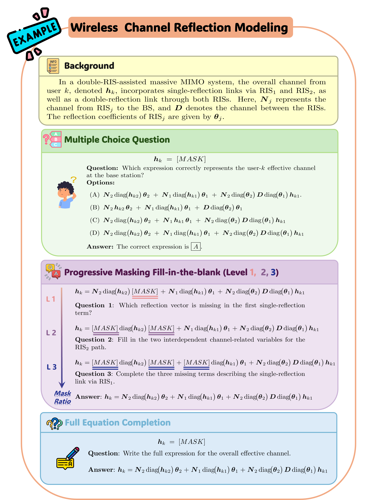
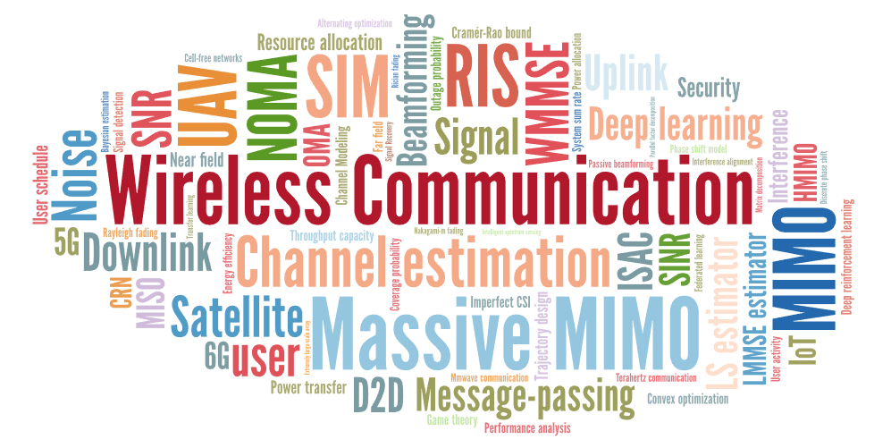
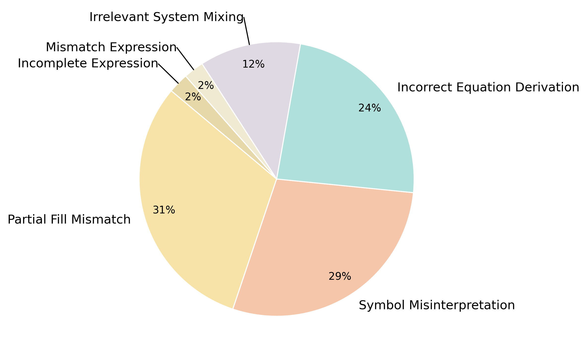

WirelessMathBench
Pushing the Boundaries of Mathematical Reasoning in Wireless Communications

Abstract
Large Language Models (LLMs) have achieved impressive results across a broad array of tasks, yet their capacity for complex, domain-specific mathematical reasoning—particularly in wireless communications—remains underexplored. In this work, we introduce WirelessMathBench, a novel benchmark specifically designed to evaluate LLMs on mathematical modeling challenges to wireless communications engineering. Our benchmark consists of 587 meticulously curated questions sourced from 40 state-of-the-art research papers, encompassing a diverse spectrum of tasks ranging from basic multiple-choice questions to complex equation completion tasks, including both partial and full completions, all of which rigorously adhere to physical and dimensional constraints. Through extensive experimentation with leading LLMs, we observe that while many models excel in basic recall tasks, their performance degrades significantly when reconstructing partially or fully obscured equations, exposing fundamental limitations in current LLMs. Even DeepSeek-R1, the best performer on our benchmark, achieves an average accuracy of only 38.05%, with a mere 7.83% success rate in full equation completion. By publicly releasing WirelessMathBench along with the evaluation toolkit, we aim to advance the development of more robust, domain-aware LLMs for wireless system analysis and broader engineering applications.
Overview
WirelessMathBench is a comprehensive benchmark specifically designed to evaluate how well Large Language Models (LLMs) can handle the mathematical modeling challenges present in wireless communications engineering. The benchmark focuses on real-world complexity and provides a multi-tiered progression of tasks of varying difficulty.
587 Curated Questions
Meticulously selected questions from 40 state-of-the-art research papers in wireless communications.
Diverse Task Types
From multiple-choice questions to progressive masking and full equation completion.
Expert Difficulty
Challenges that require deep domain knowledge and rigorous mathematical reasoning.
Real Engineering Tasks
Problems that reflect authentic modeling challenges in wireless systems.
Dataset
Task Design
WirelessMathBench incorporates three distinct task types:
Multiple-Choice Questions (MCQs)
Tasks requiring selection of the correct mathematical expression from a set of closely related distractors.
Progressively Masked Fill-in-the-Blank
System model formulas presented in partially masked form across three different masking levels, requiring reconstruction of missing information.
Full Equation Completion (FEC)
The most challenging tasks where the entire equation is hidden, requiring derivation from first principles using only a description of the wireless scenario.
Topic Coverage
The benchmark covers key wireless communication topics including:
Model-based Topics:
- RIS (19 papers)
- MIMO (12 papers)
- UAV (6 papers)
- ISAC (6 papers)
- Satellite (4 papers)
- SIM (3 papers)
- NOMA (2 papers)
Problem-based Topics:
- Beamforming (18 papers)
- Channel Estimation (12 papers)
- Performance Analysis (8 papers)
- Trajectory Design (5 papers)
- Power Allocation (5 papers)
- Resource Management (4 papers)

Results
Our extensive experiments with state-of-the-art LLMs reveal significant gaps in their ability to handle complex mathematical modeling in wireless communications:
38.05%
Best average accuracy (DeepSeek-R1)
76.00%
Best MCQ accuracy (DeepSeek-R1)
7.83%
Best accuracy on full equation completion (DeepSeek-R1)
Performance Comparison
The table below shows the performance of leading LLMs across different task types:
| Model | MCQ | Level 1 | Level 2 | Level 3 | FEC | Avg. Acc |
|---|---|---|---|---|---|---|
| DeepSeek-R1 | 76.00% | 60.00% | 34.91% | 12.50% | 7.83% | 38.05% |
| OpenAI-o1 | 66.40% | 59.17% | 32.17% | 8.04% | 6.96% | 34.55% |
| DeepSeek-V3 | 78.40% | 50.00% | 24.35% | 6.25% | 6.96% | 33.19% |
| GPT-4o | 72.80% | 42.50% | 28.70% | 6.25% | 4.35% | 30.92% |
| Gemini-1.5-pro | 65.60% | 43.33% | 29.57% | 9.82% | 6.09% | 30.88% |
Error Analysis
Our analysis of 40 randomly sampled errors from DeepSeek-R1 revealed the following error patterns:

31% - Partial Fill Mismatch
Merging multiple placeholders or placing terms in wrong positions.
29% - Symbol Misinterpretation
Wrong symbols or omissions of key symbolic elements.
24% - Incorrect Equation Derivation
Missing crucial steps or injecting extraneous components.
11% - Irrelevant System Mixing
Introducing unrelated terms or assumptions from different systems.
Paper
Citation
@inproceedings{li2025wirelessmathbench,
title={WirelessMathBench: A Mathematical Modeling Benchmark for LLMs in Wireless Communications},
author={Li, Xin and Liu, Mengbing and Wei, Li and An, Jiancheng and Debbah, Mérouane and Yuen, Chau},
booktitle={Findings of the Association for Computational Linguistics: ACL 2025},
year={2025}
}
Access the Paper
Code and Dataset
The WirelessMathBench code and dataset will be available upon publication. The resources will include:
- Full dataset of 587 questions across multiple-choice, progressive masking, and full equation completion tasks
- Evaluation toolkit for testing new models on the benchmark
- Reference implementations of baseline models
- Documentation on dataset structure and evaluation metrics